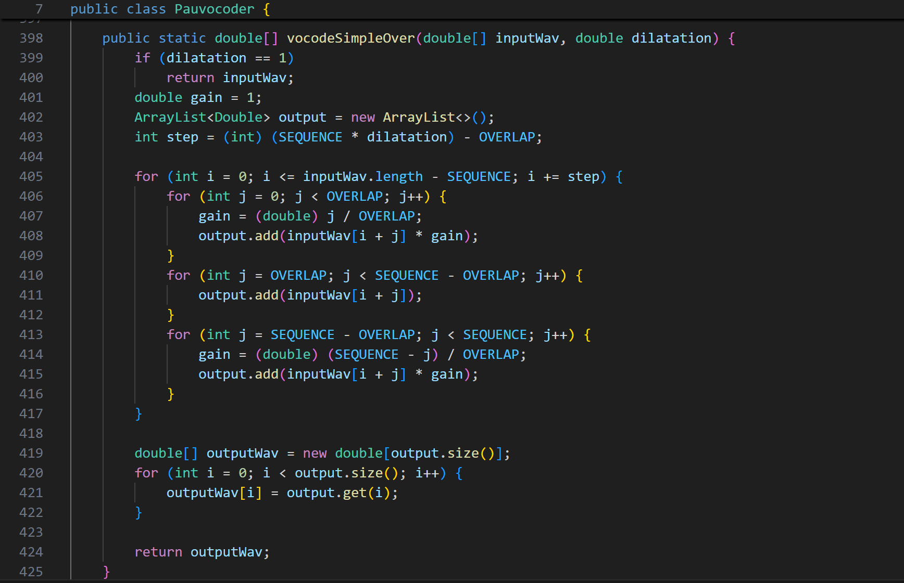

Povocoder

Ce projet étudiant en binôme a pour objectif de modifier une entrée sonore avec un paramètre de
modification de voix (plus aiguë ou plus grave). Le principal problème est de faire en sorte que
l'amplification du son soit modifiée tout en gardant sa durée initiale. Cela apporte aussi un
problème de cassure, car si l’on veut rallonger ou diminuer un son, on va enlever des parties de la
bande sonore et les parties restantes ne vont pas se suivre, ce qui va s’entendre. Pour cela,
plusieurs fonctions ont été mises en place, de la plus simple (avec des cassures) à la plus complexe
(avec des calculs de fréquences pour minimiser les cassures et que le son soit le moins saccadé
possible).